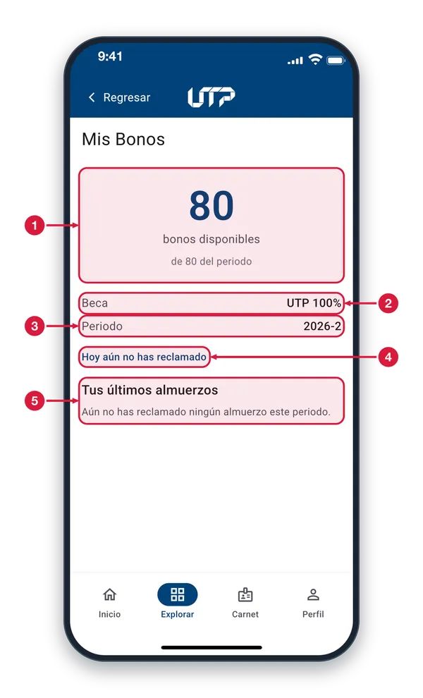
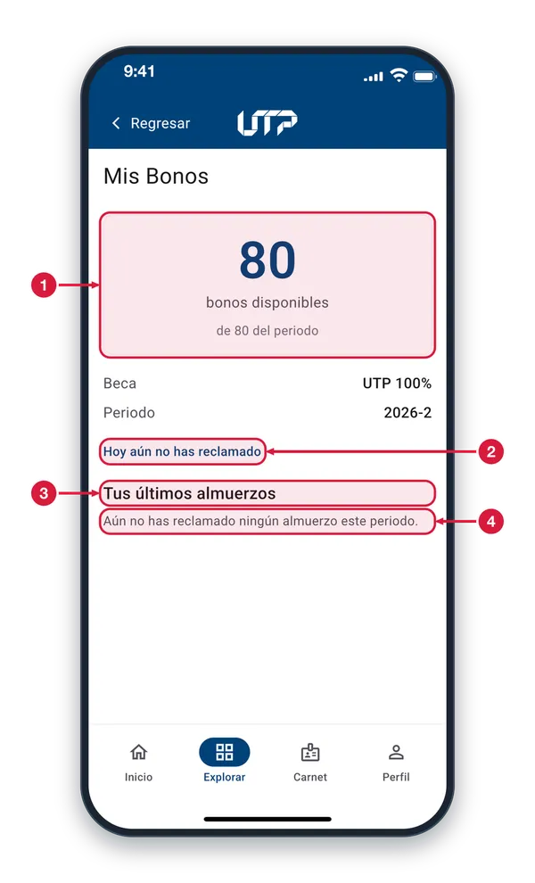
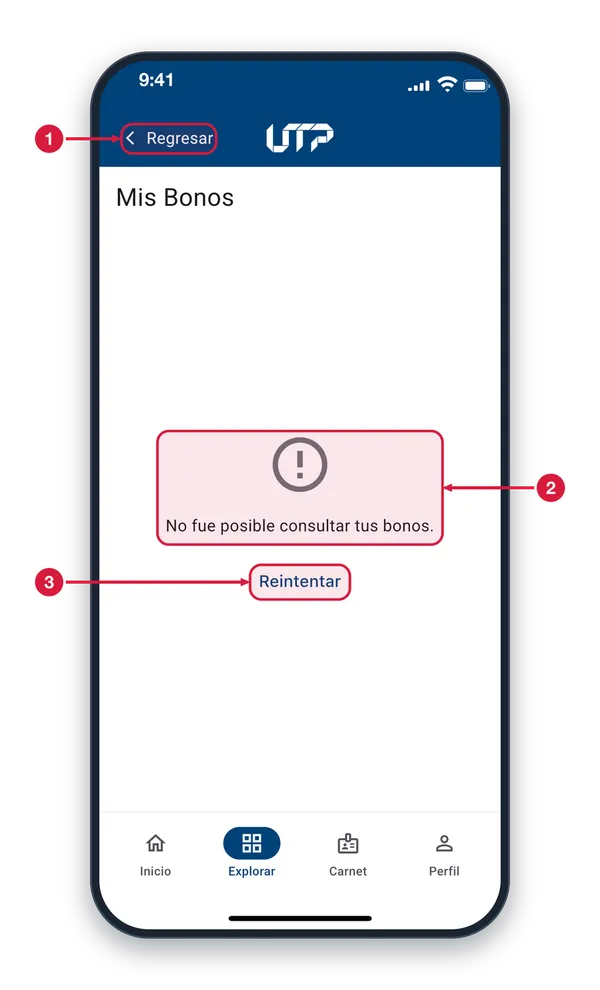

Disponible para estudiantes con beca de alimentación. Consulta cuántos almuerzos te quedan en el periodo y cuáles has reclamado.
El módulo de Mis Bonos cuenta con:
Saldo: bonos disponibles de los asignados al periodo
Tipo de beca y periodo vigente
Aviso de si hoy ya reclamaste tu almuerzo
Lista de tus últimos almuerzos
Solo podrás ver y hacer uso del módulo MIS BONOS si tienes una beca de alimentación vigente
Tu saldo de bonos1 de 3
Consulta cuántos almuerzos de tu beca de alimentación te quedan en el periodo y si hoy ya reclamaste el tuyo.

Bonos disponibles La cifra grande son los almuerzos que aún puedes reclamar. Debajo ves el total de tu beca en el periodo, por ejemplo «de 80 del periodo».
Tipo de beca Muestra la beca de alimentación que tienes asignada, por ejemplo «UTP 100%». Es la que cubre tus almuerzos en el restaurante.
Periodo Indica el periodo académico al que pertenecen tus bonos, por ejemplo «2026-2». Tus bonos se cuentan por periodo.
Estado del día Te avisa si hoy ya usaste tu almuerzo. Mientras no lo reclames dice «Hoy aún no has reclamado»; después cambia a «Ya reclamaste tu bono de hoy».
Tus últimos almuerzos Lista los almuerzos que has reclamado en el periodo, con el restaurante, el día y la hora. Si aún no has reclamado ninguno, verás un mensaje en su lugar.
Historial sin almuerzos2 de 3
Si todavía no has reclamado ningún almuerzo en el periodo, el historial muestra un mensaje en lugar de la lista.

Saldo completo Cuando la cifra grande es igual al total del periodo, como «80 de 80», significa que aún no has usado ningún bono.
Estado del día «Hoy aún no has reclamado» indica que todavía no has usado tu almuerzo de hoy. Cuando lo reclames, el aviso cambia a «Ya reclamaste tu bono de hoy».
Tus últimos almuerzos Es el historial de los almuerzos que has reclamado en el periodo. Se llena solo, a medida que reclamas tu almuerzo en el restaurante.
Mensaje de historial vacío «Aún no has reclamado ningún almuerzo este periodo» no es un error: solo indica que no hay nada que listar. Tu primer almuerzo aparecerá aquí.
Si no cargan tus bonos3 de 3
Si la app no logra traer tus bonos, muestra un aviso y un botón para volver a intentarlo.

Regresar Si no quieres esperar, toca «Regresar» para volver a la pantalla anterior. También puedes usar la barra de abajo para ir a otra sección.
Aviso de error «No fue posible consultar tus bonos» significa que la app no pudo traer tu saldo, por ejemplo por falta de internet. Revisa tu conexión.
Reintentar Toca «Reintentar» para volver a consultar tus bonos. Si el aviso sigue apareciendo, espera unos minutos y vuelve a intentarlo.